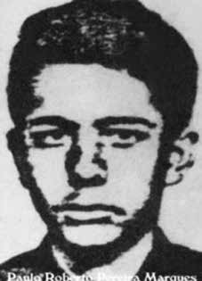

Paulo
Roberto
Pereira
Marques
CIRCUNSTÂNCIAS DA MORTE
Paulo Roberto foi visto por seus companheiros pela última vez no episódio que ficou conhecido como o “Chafurdo de Natal”, um ataque ao acampamento da Comissão Militar dos guerrilheiros ocorrido no dia 25/12/1973. Segundo o Relatório Arroyo, ele e Walkíria Afonso Costa foram enviados a um local próximo de onde estavam acampados os 15 guerrilheiros que se encontravam junto a Comissão Militar com o objetivo de procurar João (Demerval da Silva Pereira) e Mariadina (Dinaelza Santana Coqueiro) e, possivelmente, Zezim (Micheas Gomes de Almeida), Raul (Antonio Teodoro de Castro) e Lourival (Elmo Corrêa).
Eles deveriam chegar em 28/12/1973 próximo do local onde houve o tiroteio, mas nunca mais foram vistos. Em sua certidão de óbito consta apenas a data de sua morte no ano de 1973. Em depoimento ao MPF, Pedro Vicente Pereira – o Pedro Zuza – afirmou que serviu como guia do exército por dois meses e citou Paulo Roberto como um dos guerrilheiros que teria morrido no natal de 1973. Além disso, a morte de Paulo Roberto no ataque de 25/12/1973 foi confirmada pelo Sargento do Exército João Santa Cruz Sacramento, em oitiva realizada pela CNV em 20/03/2014, em Goiânia (GO).
Narrativa diferente é apresentada pelo jornalista Leonencio Nossa, autor do livro Mata!, baseado nos relatos e arquivos de Sebastião Rodrigues de Moura, o Curió. De acordo com Leonencio Nossa, Amaury “foi preso no centro clandestino de detenção e tortura conhecido como Casa Azul, em Marabá (PA). Ele afirma que Paulo Roberto “foi espancado por se recusar a dar informações e entregar colegas.
Em relatórios, os militares escreveram que ele era “sanguinário, capaz de reservar o último projétil para si mesmo‟ Ficou na Casa Azul por poucos dias. Entrou num helicóptero com as mãos amarradas. Foi fuzilado perto do rio Saranzal”.
Paulo Roberto was last seen by his companions in the episode that became known as the “Christmas Wallow”, an attack on the guerrillas' Military Commission camp that took place on 12/25/1973. According to the Arroyo Report, he and Walkíria Afonso Costa were sent to a place close to where the 15 guerrillas who were with the Military Commission were camped with the aim of looking for João (Demerval da Silva Pereira) and Mariadina (Dinaelza Santana Coqueiro) and, possibly, Zezim (Micheas Gomes de Almeida), Raul (Antonio Teodoro de Castro) and Lourival (Elmo Corrêa).
They were supposed to arrive on 12/28/1973 near the place where the shooting took place, but were never seen again. His death certificate only states the date of his death in 1973. In a statement to the MPF, Pedro Vicente Pereira – known as Pedro Zuza – stated that he served as an army guide for two months and cited Paulo Roberto as one of the guerrillas who had died at Christmas 1973. Furthermore, Paulo Roberto's death in the attack on 12/25/1973 was confirmed by Army Sergeant João Santa Cruz Sacramento, in a hearing carried out by the CNV on 03/20/2014, in Goiânia (GO).
A different narrative is presented by journalist Leonencio Nossa, author of the book Mata!, based on the reports and archives of Sebastião Rodrigues de Moura, Curió. According to Leonencio Nossa, Amaury “was arrested in the clandestine detention and torture center known as Casa Azul, in Marabá (PA) He states that Paulo Roberto “was beaten for refusing to give information and hand over colleagues.
In reports, the military wrote that he was “bloodthirsty, capable of reserving the last projectile for himself”. He stayed in the Blue House for a few days. He got into a helicopter with his hands tied. He was shot near the Saranzal River”.
Paulo Roberto fue visto por última vez por sus compañeros en el episodio que se conoció como el “Revolcadero de Navidad”, un ataque al campamento de la Comisión Militar de la guerrilla ocurrido el 25/12/1973. Según el Informe Arroyo, él y Walkíria Afonso Costa fueron enviados a un lugar cercano a donde estaban acampados los 15 guerrilleros que estaban con la Comisión Militar con el objetivo de buscar a João (Demerval da Silva Pereira) y Mariadina (Dinaelza Santana Coqueiro) y, posiblemente, Zezim (Micheas Gomes de Almeida), Raúl (Antonio Teodoro de Castro) y Lourival (Elmo Corrêa).
Se suponía que llegarían el 28/12/1973 cerca del lugar donde tuvo lugar el tiroteo, pero nunca más fueron vistos. Su certificado de defunción sólo indica la fecha de su muerte en 1973. En declaración al MPF, Pedro Vicente Pereira – conocido como Pedro Zuza – afirmó que sirvió como guía del ejército durante dos meses y citó a Paulo Roberto como uno de los guerrilleros fallecidos en la Navidad de 1973. Además, la muerte de Paulo Roberto en el atentado del 25/12/1973 fue confirmada por el Sargento del Ejército João Santa Cruz Sacramento, en audiencia realizada por la CNV el 20/03/2014, en Goiânia (GO).
Una narrativa diferente la presenta el periodista Leonencio Nossa, autor del libro ¡Mata!, a partir de los informes y archivos de Sebastião Rodrigues de Moura, Curió. Según Leonencio Nossa, Amaury “fue detenido en el centro clandestino de detención y tortura conocido como Casa Azul, en Marabá (PA). Afirma que Paulo Roberto “fue golpeado por negarse a dar información y entregar compañeros.
En los informes, los militares escribieron que era “sediento de sangre, capaz de reservarse el último proyectil”. Permaneció unos días en la Casa Azul. Se subió a un helicóptero con las manos atadas. Le dispararon cerca del río Saranzal”.